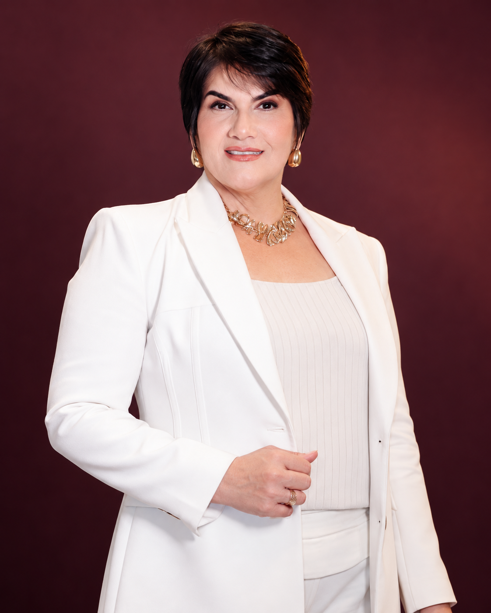
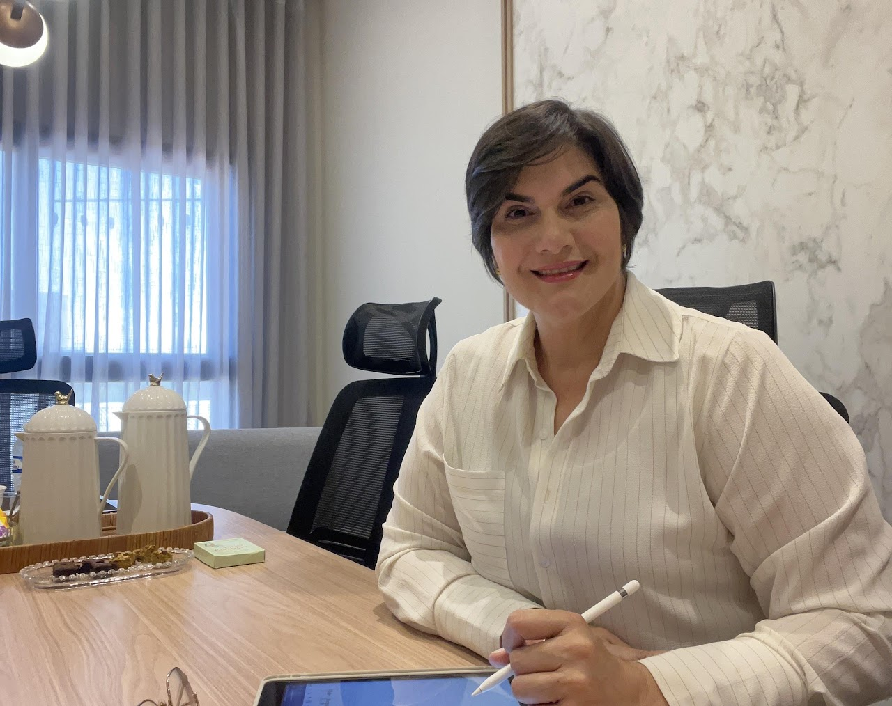

Decisões e prioridades
Defina suas prioridades profissionais e identifique onde concentrar seu esforço.
COM LUCIANE MAGALHÃES
Para empresários e profissionais liberais que querem melhorar a gestão, liderar equipes e trabalhar os bloqueios que dificultam suas decisões.

Luciane Magalhães
01 / A MENTORIA
Gestão, liderança e desenvolvimento pessoal, com planejamento e acompanhamento individual ao longo de seis meses.
Luciane combina abordagens de coaching e mentoring para trabalhar seus desafios profissionais e pessoais.
Defina suas prioridades profissionais e identifique onde concentrar seu esforço.
Desenvolva habilidades para lidar com pressões, tomar decisões e liderar pessoas.
Organize suas atividades, melhore sua produtividade e reduza a carga mental.
Amplie sua visão com ferramentas práticas para o seu desempenho profissional.
Conte com um espaço estruturado para trabalhar desafios e acompanhar sua evolução.
DESAFIOS DO DIA A DIA
Clientes, equipe, tempo e decisões: a mentoria aborda questões que fazem parte da rotina de quem empreende.
Conheça sua jornadaDificuldade em atrair clientes de forma consistente, fechar contratos ou se destacar no mercado e nas mídias digitais.
Desafios para equilibrar demandas pessoais e profissionais, delegar tarefas, engajar a equipe e tomar decisões estratégicas.
Medo do fracasso, procrastinação e falta de confiança. Pressões e conflitos que afetam suas decisões e seu desempenho.
Pouco acesso a uma rede de relacionamentos que contribua com oportunidades e com o seu crescimento profissional.
02 / SUA JORNADA
A trilha reúne desenvolvimento pessoal, planejamento e revisão da estratégia. Os oito passos estão organizados abaixo.
Olhe para seus desafios, reconheça o que limita sua ação e encontre uma direção para crescer.
Mentalidade & direçãoTrabalhe seu posicionamento e organize o planejamento com ferramentas aplicáveis ao seu dia a dia.
Posicionamento & planejamentoRevise sua estratégia e dê continuidade ao desenvolvimento com acompanhamento ao longo da jornada.
Revisão & acompanhamentoO primeiro passo para a Mentoria Evolution.
Onboarding e acesso à Metodologia Evolution.
Desenvolvimento com frequência e direção.
Um olhar para crenças e bloqueios que limitam sua ação.
Orientação para redes sociais, se necessário.
Checklist para organizar seus próximos passos.
Um momento para revisar a direção da sua jornada.
Suporte contínuo durante os seis meses.
03 / HISTÓRIAS REAIS
Relatos de profissionais e empresários que participaram da Mentoria Evolution.
META ALCANÇADA3meses
seguidos
Lucas relata a sequência de metas atingidas durante sua trajetória com a mentoria.
CRESCIMENTO RELATADO2×o faturamento
em um ano
O relato de Francielly apresenta a evolução do faturamento ao longo de um ano.
NA EXPERIÊNCIA DE ANA CAROLINAUma grande
vitória.
Ana Carolina compartilha o significado da Mentoria Evolution em sua própria jornada.
1 de 3 Arraste para explorar
Experiências individuais relatadas pelos mentorados. Cada trajetória tem seu próprio contexto e resultados.

04 / SUA MENTORA
Mais de 30 anos de experiência em desenvolvimento humano.
Uma trajetória que une vivência empresarial e desenvolvimento humano. Luciane atuou por 13 anos no agronegócio e reúne sua experiência na Metodologia Evolution.
Graduada em Ciências Contábeis e Psicologia, é mentora profissional, terapeuta, professora e palestrante internacional.
Coach ICI Integral; hipnoterapeuta Proficiency ES; Practitioner e Meta Practitioner em PNL; facilitadora em PSYCH-K; certificação em Psicologia Positiva e em Hipnose Ericksoniana básica e avançada.
Formadora e criadora de cursos, incluindo um curso com selo internacional da HCN World, empresa de treinamentos sediada em Copenhagen, Dinamarca.
05 / COMO FUNCIONA
Atendimento individual, disponível presencialmente ou online.
6 meses de acompanhamento
2 encontros mensais
Presencial ou online
Para empresários e profissionais liberais que buscam desenvolver sua mentalidade, liderança, gestão e posicionamento, com foco no crescimento pessoal e profissional.
Os encontros são individuais. É um momento dedicado a você e à sua jornada de desenvolvimento com Luciane Magalhães.
O programa dura seis meses, com dois encontros por mês. A trilha inclui planejamento, revisão estratégica e acompanhamento contínuo.
Sim. A mentoria é oferecida nas modalidades presencial e online.
Acesso à Metodologia Evolution, encontros quinzenais, sessão destrave, planejamento, revisão estratégica e acompanhamento por seis meses. A orientação de posicionamento para redes sociais faz parte da trilha quando necessária.
O primeiro passo é preencher o formulário de aplicação. O envio da aplicação não garante a vaga nem equivale à confirmação da sua participação.
Abrir formulário de aplicaçãoAPLICAÇÃO
Preencha a aplicação para a Mentoria Evolution com Luciane Magalhães.
Fazer minha aplicação O preenchimento da aplicação não garante a sua vaga.